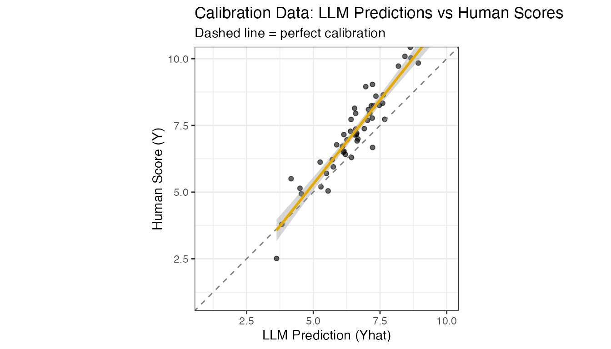
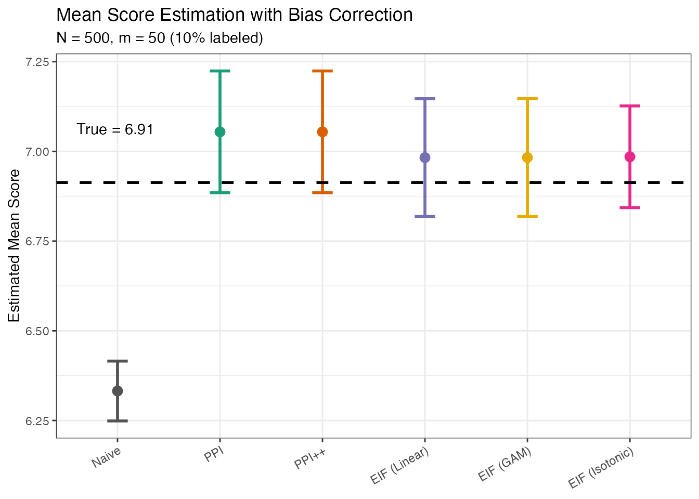

Continuous Outcome Example
continuous-outcomes.RmdOverview
While the Getting Started vignette focuses on discrete outcomes (e.g., binary win/loss classifications), many LLM evaluation tasks involve continuous scores. For example:
- Quality scores on a 1-10 scale
- Helpfulness ratings
- Relevance scores for retrieval
- Fluency or coherence metrics
When an LLM judge produces continuous predictions \(\hat{Y}\) for a true continuous score \(Y\), the naive approach of averaging \(\hat{Y}\) can be biased if the LLM’s predictions are systematically off. This vignette demonstrates how to correct for this bias using calibration data.
Problem Setup
The Goal
We want to estimate the population mean of a true continuous score:
\[\theta = E[Y]\]
where \(Y\) is the ground truth score (e.g., human ratings) and \(\hat{Y}\) is the LLM judge’s prediction.
Why Bias Occurs
For continuous outcomes, bias arises when:
- Systematic over/under-prediction: The LLM consistently rates higher or lower than humans
- Non-linear calibration: The relationship between \(\hat{Y}\) and \(Y\) is not one-to-one
- Distribution shift: The test data differs from the training data of the prediction model
Unlike the discrete case where we model sensitivity/specificity, here we model the conditional expectation \(E[Y | \hat{Y}]\) using various calibration methods.
Available Estimators
For continuous outcomes, this package provides:
| Estimator | Description |
|---|---|
| Naive | Simply averages \(\hat{Y}\) - ignores calibration data |
| PPI | Prediction-Powered Inference - adds bias correction |
| PPI++ | PPI with optimal weighting to minimize variance |
| EIF | Efficient Influence Function - uses calibration model \(g(\hat{Y}) \approx E[Y|\hat{Y}]\) |
Simulated Example
Let’s simulate a scenario where an LLM judge provides quality scores, but with systematic bias.
Generate Data
# Parameters
N <- 500 # Total samples
m <- 50 # Calibration set size (10% labeled)
# Generate true scores (e.g., human quality ratings on 1-10 scale)
# True mean is around 7, but with variation
Y_all <- rnorm(N, mean = 7.0, sd = 1.5)
# LLM predictions: regress toward the mean (less extreme than truth)
# Yhat = 0.7 * Y + 0.3 * 5 + noise
# The LLM "pulls" predictions toward 5 (middle of 1-10 scale)
shrinkage <- 0.7
anchor <- 5.0 # LLM's implicit "anchor" point
Yhat_all <- shrinkage * Y_all + (1 - shrinkage) * anchor + rnorm(N, 0, 0.4)
# Split into calibration and test sets
idx_cal <- sample(N, m)
idx_test <- setdiff(seq_len(N), idx_cal)
Y_cal <- Y_all[idx_cal]
Yhat_cal <- Yhat_all[idx_cal]
Yhat_test <- Yhat_all[idx_test]
Y_test <- Y_all[idx_test] # Ground truth for test (only for evaluation)
# True mean on test set (what we want to estimate)
theta_test <- mean(Y_test)
cat("True mean score (test set):", round(theta_test, 3), "\n")
#> True mean score (test set): 6.913
cat("Naive estimate (mean of Yhat):", round(mean(Yhat_test), 3), "\n")
#> Naive estimate (mean of Yhat): 6.332
cat("Bias in naive estimate:", round(mean(Yhat_test) - theta_test, 3), "\n")
#> Bias in naive estimate: -0.581Visualize Calibration Data
library(ggplot2)
#> Warning: package 'ggplot2' was built under R version 4.4.3
cal_df <- data.frame(Y = Y_cal, Yhat = Yhat_cal)
ggplot(cal_df, aes(x = Yhat, y = Y)) +
geom_point(alpha = 0.6) +
geom_abline(intercept = 0, slope = 1, linetype = "dashed", color = "gray50") +
geom_smooth(method = "lm", se = TRUE, color = "#E6AB02") +
labs(
title = "Calibration Data: LLM Predictions vs Human Scores",
subtitle = "Dashed line = perfect calibration",
x = "LLM Prediction (Yhat)",
y = "Human Score (Y)"
) +
theme_bw() +
coord_fixed(xlim = c(1, 10), ylim = c(1, 10))
#> `geom_smooth()` using formula = 'y ~ x'
Apply Estimators
# 1. Naive estimate (no correction)
naive_result <- naive_continuous_point_and_ci(
Yhat_test = Yhat_test,
alpha = 0.10
)
# 2. PPI (Prediction-Powered Inference)
ppi_result <- ppi_continuous_point_and_ci(
Y_cal = Y_cal,
Yhat_cal = Yhat_cal,
Yhat_test = Yhat_test,
alpha = 0.10
)
# 3. PPI++ (with optimized lambda)
ppi_pp_result <- ppi_pp_continuous_point_and_ci(
Y_cal = Y_cal,
Yhat_cal = Yhat_cal,
Yhat_test = Yhat_test,
alpha = 0.10
)
# 4. EIF with linear calibration
eif_linear_result <- eif_continuous_point_and_ci(
Y_cal = Y_cal,
Yhat_cal = Yhat_cal,
Yhat_test = Yhat_test,
calibration_method = "linear",
alpha = 0.10
)
# 5. EIF with GAM calibration (more flexible)
eif_gam_result <- eif_continuous_point_and_ci(
Y_cal = Y_cal,
Yhat_cal = Yhat_cal,
Yhat_test = Yhat_test,
calibration_method = "gam",
alpha = 0.10
)
# 6. EIF with isotonic calibration (monotonic)
eif_iso_result <- eif_continuous_point_and_ci(
Y_cal = Y_cal,
Yhat_cal = Yhat_cal,
Yhat_test = Yhat_test,
calibration_method = "isotonic",
alpha = 0.10
)Compare Results
results <- data.frame(
Method = c("True", "Naive", "PPI", "PPI++",
"EIF (Linear)", "EIF (GAM)", "EIF (Isotonic)"),
Estimate = c(
theta_test,
naive_result$theta,
ppi_result$theta,
ppi_pp_result$theta,
eif_linear_result$theta,
eif_gam_result$theta,
eif_iso_result$theta
),
CI_Lower = c(
NA,
naive_result$ci_lower,
ppi_result$ci_lower,
ppi_pp_result$ci_lower,
eif_linear_result$ci_lower,
eif_gam_result$ci_lower,
eif_iso_result$ci_lower
),
CI_Upper = c(
NA,
naive_result$ci_upper,
ppi_result$ci_upper,
ppi_pp_result$ci_upper,
eif_linear_result$ci_upper,
eif_gam_result$ci_upper,
eif_iso_result$ci_upper
)
)
results$Bias <- results$Estimate - theta_test
results$CI_Width <- results$CI_Upper - results$CI_Lower
results$Covers_True <- results$CI_Lower <= theta_test & results$CI_Upper >= theta_test
knitr::kable(results, digits = 3)| Method | Estimate | CI_Lower | CI_Upper | Bias | CI_Width | Covers_True |
|---|---|---|---|---|---|---|
| True | 6.913 | NA | NA | 0.000 | NA | NA |
| Naive | 6.332 | 6.249 | 6.416 | -0.581 | 0.167 | FALSE |
| PPI | 7.054 | 6.885 | 7.224 | 0.141 | 0.339 | TRUE |
| PPI++ | 7.054 | 6.885 | 7.224 | 0.141 | 0.339 | TRUE |
| EIF (Linear) | 6.983 | 6.819 | 7.147 | 0.070 | 0.328 | TRUE |
| EIF (GAM) | 6.983 | 6.819 | 7.147 | 0.070 | 0.328 | TRUE |
| EIF (Isotonic) | 6.985 | 6.843 | 7.127 | 0.072 | 0.284 | TRUE |
Visualize Results
plot_df <- results[results$Method != "True", ]
plot_df$Method <- factor(plot_df$Method,
levels = c("Naive", "PPI", "PPI++",
"EIF (Linear)", "EIF (GAM)", "EIF (Isotonic)"))
ggplot(plot_df, aes(x = Method, y = Estimate, color = Method)) +
geom_point(size = 3) +
geom_errorbar(aes(ymin = CI_Lower, ymax = CI_Upper), width = 0.2, linewidth = 1) +
geom_hline(yintercept = theta_test, linetype = "dashed", linewidth = 1) +
annotate("text", x = 0.6, y = theta_test + 0.15,
label = paste("True =", round(theta_test, 2)), hjust = 0) +
scale_color_manual(values = c(
"Naive" = "#525252",
"PPI" = "#1B9E77",
"PPI++" = "#D95F02",
"EIF (Linear)" = "#7570B3",
"EIF (GAM)" = "#E6AB02",
"EIF (Isotonic)" = "#E7298A"
)) +
labs(
title = "Mean Score Estimation with Bias Correction",
subtitle = paste0("N = ", N, ", m = ", m, " (", round(100*m/N), "% labeled)"),
y = "Estimated Mean Score",
x = NULL
) +
theme_bw() +
theme(
legend.position = "none",
axis.text.x = element_text(angle = 30, hjust = 1)
)
Next Steps
- See the Getting Started vignette for discrete outcome examples
- See the Real Data Example for applying these methods to actual LLM evaluations